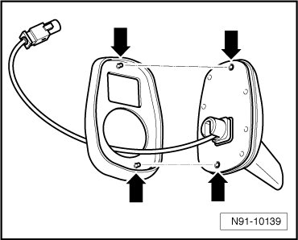

Roof Antenna
Roof Antenna
Roof antenna is installed for Telephone/Telematics and Navigation systems.
Removing
- Remove roof console in molded headliner.
• On vehicles with sunroof, also remove sunroof drive motor.
- Remove nut - 3 -.

• Depending on antenna version, additional connections to those illustrated are possible.
Connector with violet housing is telephone wire connection.
Connector with blue housing is navigation system wire connection.
Installing
Install in reverse order of removal.
• When inserting roof antenna, ensure gasket is properly seated. Both guide protrusions of gasket must be seated in the appropriate holes - arrows - in antenna base.

• When inserting roof antenna, make sure antenna wires - 2 - are routed correctly through the wire pass-through - 1 - in mounting nut - 3 -.